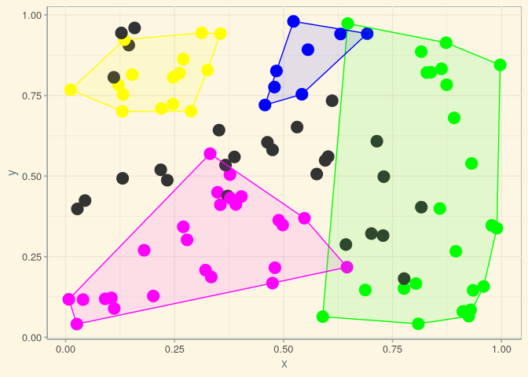
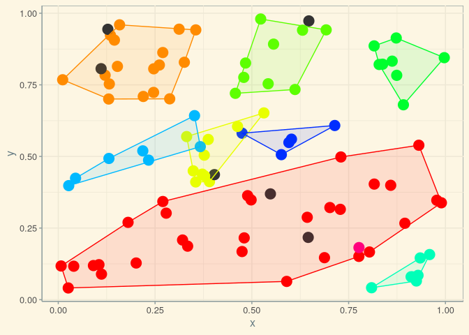
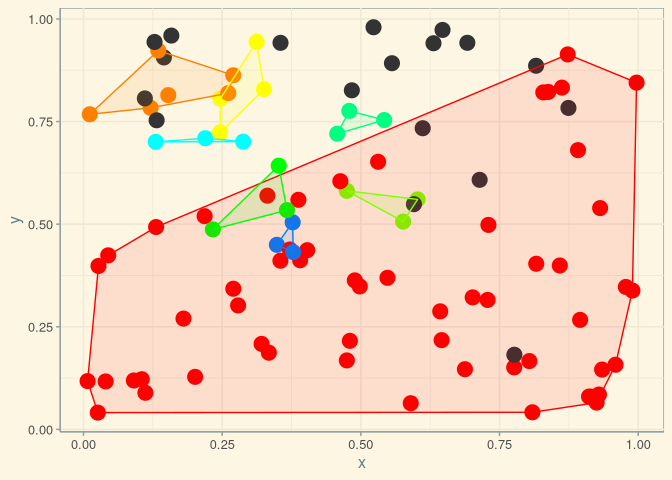

An R package for spatially-constrained clustering using either distance or covariance matrices. The package includes both an implementation of the REDCAP collection of efficient yet approximate algorithms described in D. Guo’s 2008 paper, “Regionalization with dynamically constrained agglomerative clustering and partitioning.” (pdf available here), with extension to covariance matrices, and a new technique for computing clusters using complete data sets. The package is also designed to analyse matrices of spatial interactions (counts, densities) between sets of origin and destination points. The spatial structure of interaction matrices is able to be statistically analysed to yield both global statistics for the overall spatial structure, and local statistics for individual clusters. ‘’Spatially-constrained’’ means that the data from which clusters are to be formed also map on to spatial reference points, and the constraint is that clusters must be spatially contiguous.
Installation
You can install spatialcluster from github with:
# install.packages("remotes")
remotes::install_github("mpadge/spatialcluster")Usage
There are two main functions, scl_redcap() and scl_exact(), where the latter generates a clustering scheme using all available data. Both of these require three main arguments:
- A rectangular matrix of coordinates of points to be clustered (
nrows; at least 2 columns); - An
n-by-nsquare matrix quantifying relationships between those points; - A single value (
ncl) specifying the desired number of clusters.
Usage can be demonstrated with some simple fake data:
The load the package and call the function:
library (spatialcluster)
scl <- scl_redcap (xy, dmat, ncl = 8, linkage = "single")
plot (scl)
scl <- scl_redcap (xy, dmat, ncl = 8, linkage = "average")
plot (scl)
scl <- scl_redcap (xy, dmat, ncl = 8, linkage = "complete")
plot (scl)


This example illustrates the universal danger in all clustering algorithms: they can not fail to produce results, even when the data fed to them are definitely devoid of any information as in this example. Clustering algorithms should only be applied to reflect a very specific hypothesis for why data should be clustered in the first place; spatial clustering algorithms should only be applied to reflect two very specific hypothesis for (i) why data should be clustered at all, and
(ii) why those clusters should manifest a spatial pattern.